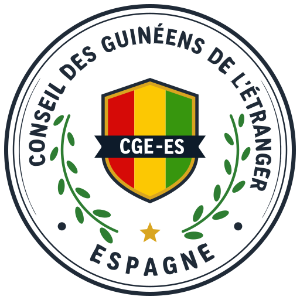
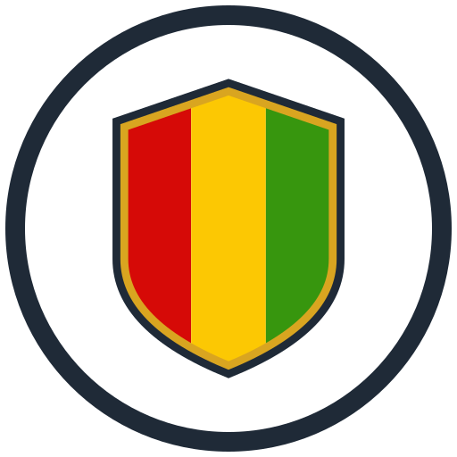
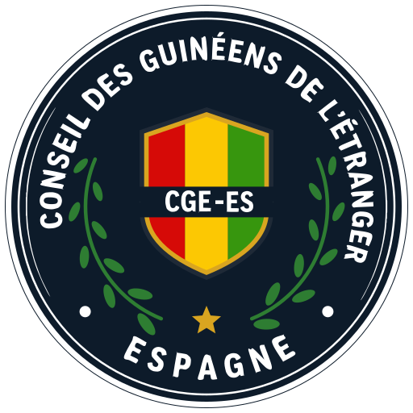
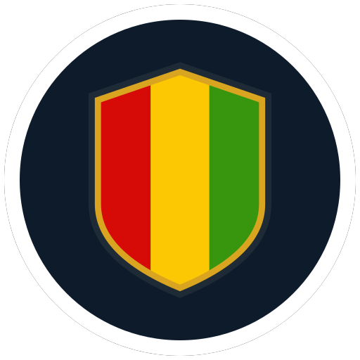
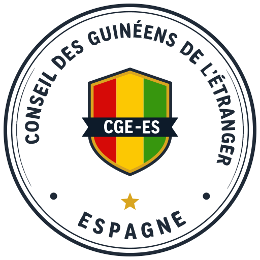
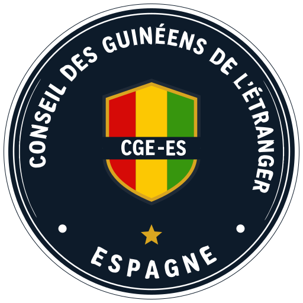

Campo blanco con la letra en navy, dos aros finos, escudo con filete dorado y cinta con el acrónimo, estrella dorada abajo y los dos puntos a los lados. Sin manos y sin mapas. A 44 y 22 px se queda solo el escudo con los aros: lo demás, a ese tamaño, es ruido.

132
44 · cabecera
pie
34
132
pie